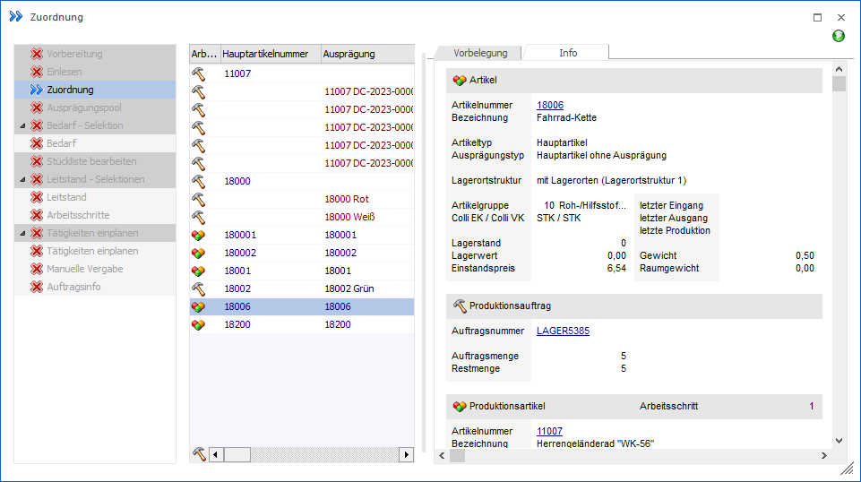

Im Register "Info" der Zuordnung stehen diverse Informationen, bezogen auf den aktuellen Artikel und den Produktionsauftrag, zur Verfügung.
Hinweis
Die Register Vorbelegung und "Info" können mit
Hilfe der Buttons und  , welche sich im rechten oberen Bereich des
Fensters befinden, ein- bzw. ausgeblendet werden.
, welche sich im rechten oberen Bereich des
Fensters befinden, ein- bzw. ausgeblendet werden.
